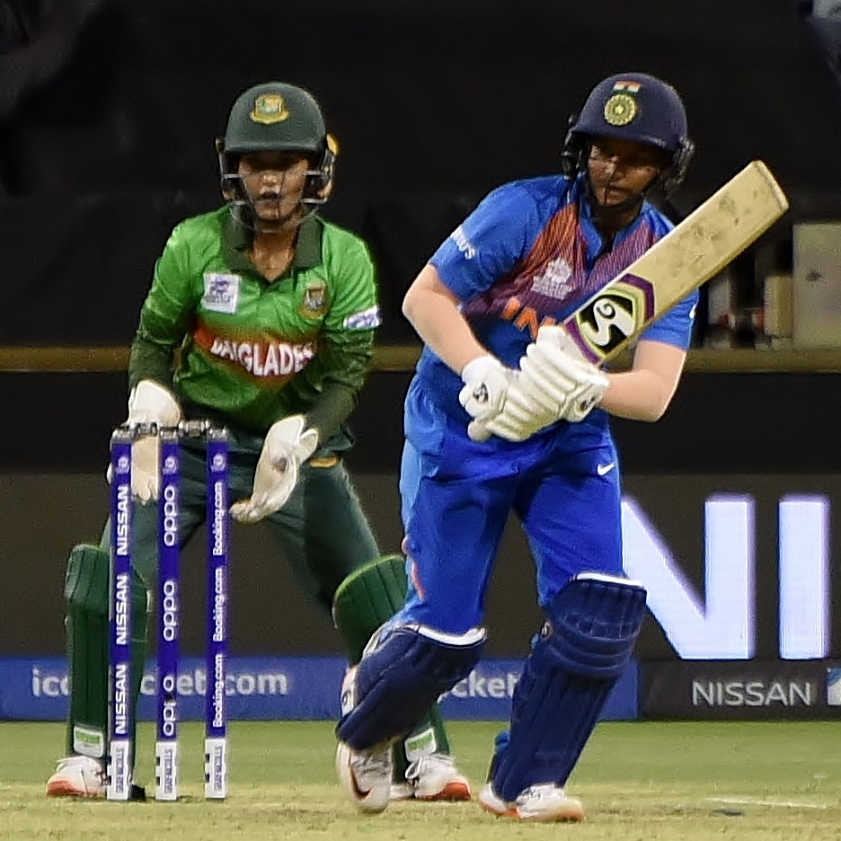

How good is India's Deepti Sharma, the bowler?
Despite having played only 10 innings in Test cricket, she features among the best in the world

Source: Wikimedia Commons
Deepti Sharma tossed up one on middle and leg stump and Australia's Beth Mooney fell for it. Her attempted slog had height but no distance. Radha Yadav held on to the catch at long-on giving Deepti her 356th international wicket. She now had the most wickets in international cricket, surpassing her former teammate and world legend Jhulan Goswami.
In a career spanning nearly 12 years, she has picked up 356 wickets across all formats, the most in the world. She and Goswami are the only two Indians in the all-time tally of the 15 highest wicket-takers. Among those currently playing, Australia's Ellyse Perry and England's Sophie Ecclestone are not far behind Deepti.
Having played most of her international career in T20 Internationals, it is understandable that she has the most wickets in the format. In her Test career so far, she has 22 wickets in 10 innings to her credit.
She is a Test elite
Here is where it gets interesting.
In the 10 Test innings that she has bowled in, she has picked up 22 wickets. Among bowlers who have picked up at least 20 wickets in the format she is among the best. Let's unpack this a bit.
In Test matches how good a bowler is depends on the number of balls they bowl per wicket, also called as strike rate, and the number of runs they concede per wicket, also known as average. The lesser these two values, the better the bowler is. In a scatter-plot that shows both these values for each bowler, Deepti features among the world's elite. Her performance is significantly better compared to the players' averages of strike rate and average.